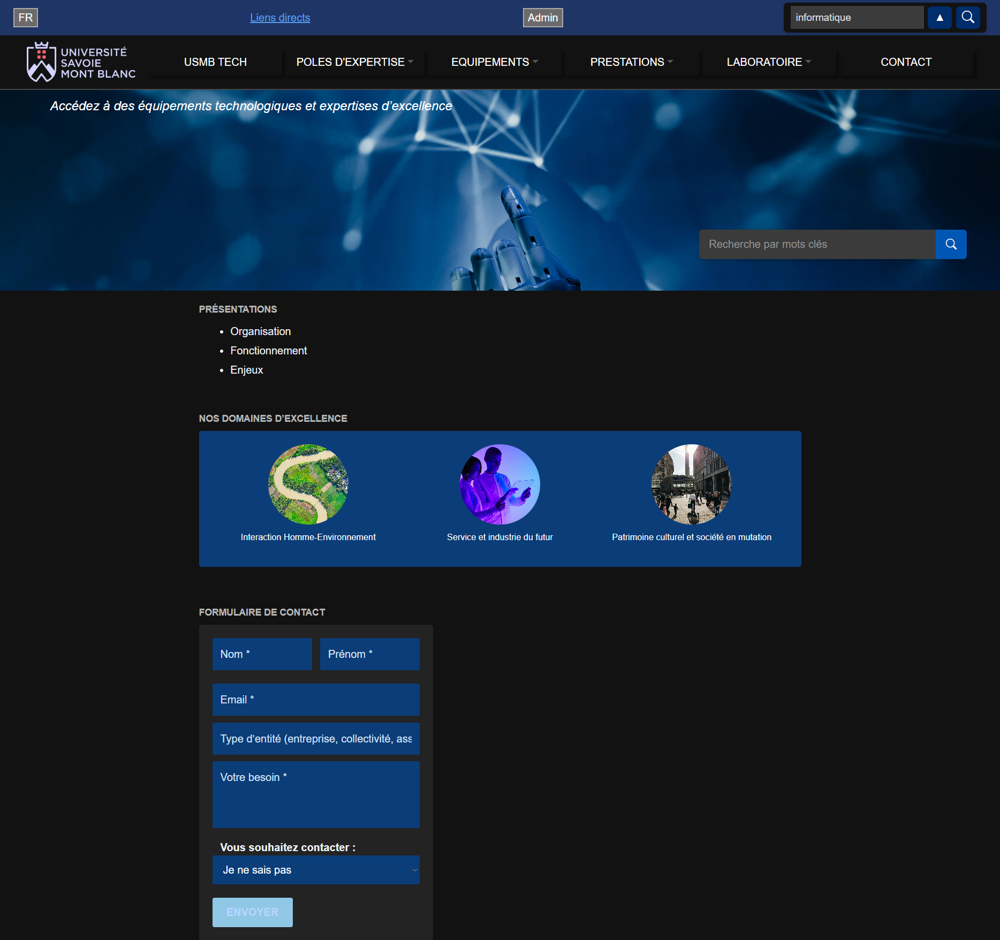

Implémentation d'un besoin client
Octobre 2025 - Janvier 2026📋 Contexte académique
Situation d'apprentissage et d'évaluation à l'IUT d'Annecy, en groupe de 5 étudiants
🎯 Projet réalisé
Réalisation d'un site web pour l'Université Savoie Mont Blanc
Collecte et analyse des besoins, modélisation de la base de données, développement d'un site web en Blazor, développement d'une API Back-end en C#, intégration d'une base de données PostgreSQL, tests et validation, intégration d'une Intelligence Artificielle.
🛠️ Technologies utilisées
Blazor
C#
PostgreSQL
Azure
API REST
IA
📚 Apprentissages critiques
- Architecture logicielle : Choisir et implémenter des architectures adaptées avec séparation front/back
- Accessibilité : Appliquer des principes d'accessibilité et d'ergonomie
- Production : Intégrer des solutions dans un environnement de production via Azure
- Qualité : Vérifier et valider la qualité de l'application par les tests
- Sécurité : Comprendre les enjeux et moyens de sécurisation des données et du code
- RGPD : Assurer la confidentialité des données (intégrité et sécurité)
- Base de données : Organiser la restitution de données à travers la programmation et la visualisation
- Données hétérogènes : Manipuler des données hétérogènes
- Gestion de projet : Formaliser les besoins du client et de l'utilisateur
- Suivi de projet : Définir et mettre en œuvre une démarche de suivi de projet
- Travail en équipe : Appliquer une démarche pour intégrer une équipe informatique
- Compétences interpersonnelles : Mobiliser les compétences interpersonnelles pour intégrer une équipe informatique
🎓 Compétences visées
C1 - Adapter des applications sur un ensemble de supports
C2 - Analyser et optimiser des applications
C3 - Déployer des services dans une architecture réseau
C4 - Optimiser une base de données
C5 - Appliquer une démarche de suivi de projet
C6 - Situer son rôle au sein d'une équipe informatique